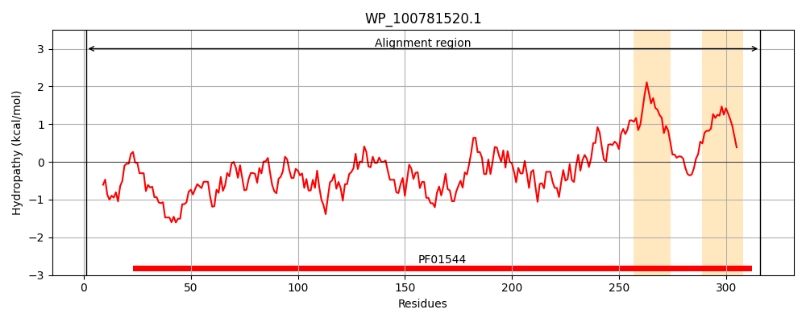
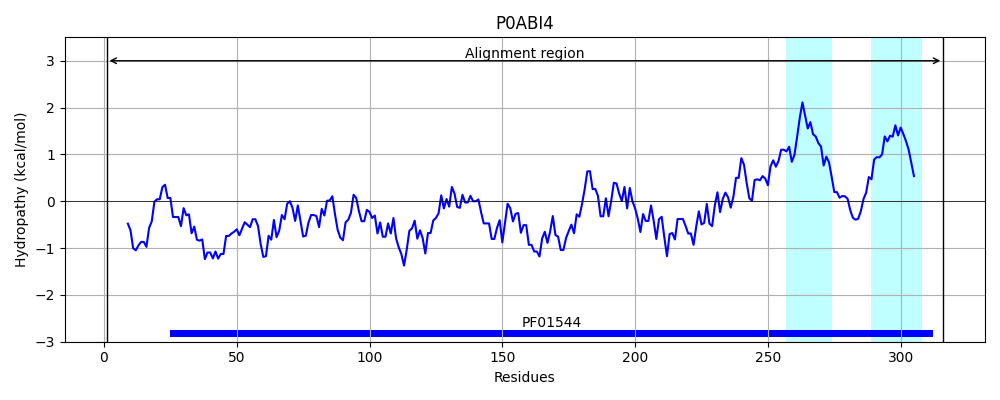
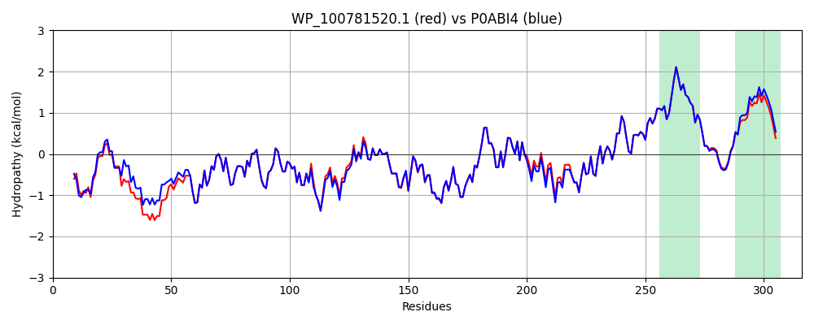

Hit Accession: P0ABI4
Hit TCID: 1.A.35.1.1
Hit Description: gnl|BL_ORD_ID|8705 gnl|TC-DB|P0ABI4|1.A.35.1.1 Magnesium transport protein corA - Escherichia coli.
Mach Len: 316
e:0.000000
Query TMS Count : 2
Hit TMS Count: 2
TMS-Overlap Score: 1.900000
Predicted Substrates:CHEBI:6635;magnesium(2+), CHEBI:23337;cobalt(2+), CHEBI:25517;nickel(2+)
BLAST Alignment:
Score: 1516 , Bit scores: 588 bits, E-value: 0.0e+00, Alignment length: 316, Percentage identity: 92
Query: 1 MLSAFQLENNRLTRLEADDIKHLASSVWVDLVEPDDDERSRVQTELGQNLATRPELEDIEASARFFEDEDGLHIHSFFFFEDAEDHAGNSTVAFTIREGRLFTLRERELPAFRLYRMRVRNQTLVDGNAYELLLDLFETKIEQLADEIENIYSDLEKLSRVIMEGHQGDEYDEALSTLAELEDIGWKVRLCLMDTQRALNFLVRKARLPAGQLEQAREILRDIESLLPHNESLFQKVNFLMQAAMGFINIEQNRIIKIFSVVSVVFLPPTLVASSYGMNFEFMPELHWSFGYPGAIVFMMLAGLAPYLYFKRKNWL 316
MLSAFQLENNRLTRLE ++ + L ++VW+DLVEPDDDER RVQ+ELGQ+LATRPELEDIEASARFFED+DGLHIHSFFFFEDAEDHAGNSTVAFTIR+GRLFTLRERELPAFRLYRMR R+Q++VDGNAYELLLDLFETKIEQLADEIENIYSDLE+LSRVIMEGHQGDEYDEALSTLAELEDIGWKVRLCLMDTQRALNFLVRKARLP GQLEQAREILRDIESLLPHNESLFQKVNFLMQAAMGFINIEQNRIIKIFSVVSVVFLPPTLVASSYGMNFEFMPEL WSFGYPGAI+FM+LAGLAPYLYFKRKNWL
Sbjct: 1 MLSAFQLENNRLTRLEVEESQPLVNAVWIDLVEPDDDERLRVQSELGQSLATRPELEDIEASARFFEDDDGLHIHSFFFFEDAEDHAGNSTVAFTIRDGRLFTLRERELPAFRLYRMRARSQSMVDGNAYELLLDLFETKIEQLADEIENIYSDLEQLSRVIMEGHQGDEYDEALSTLAELEDIGWKVRLCLMDTQRALNFLVRKARLPGGQLEQAREILRDIESLLPHNESLFQKVNFLMQAAMGFINIEQNRIIKIFSVVSVVFLPPTLVASSYGMNFEFMPELKWSFGYPGAIIFMILAGLAPYLYFKRKNWL 316 | Protein Hydropathy Plots: |
|---|
|  |  |
Pairwise Alignment-Hydropathy Plot:
|
|---|
|  |